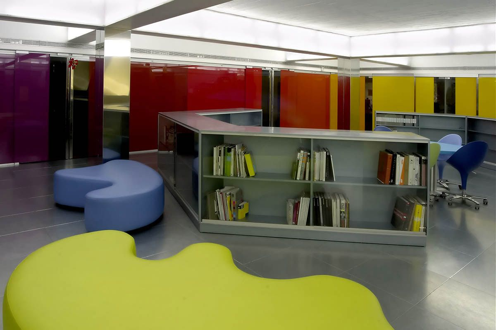

|
2005 |
Oficinas McCann EricksonLa reforma del conjunto de oficinas para Universal McCann subraya la creatividad que caracteriza el mundo de la publicidad y se aplica al diseño de interiores de su espacio de trabajo. Ubicadas en el Paseo de la Castellana en Madrid, una de las principales calles de la ciudad, el conjunto para McCann ocupa alrededor de 1.500 metros cuadrados distribuidos entre dos plantas. Durante la obra, las dos plantas fueron conectadas tras la demolición de un ático, para así tener una recepción a doble altura y una singular escalera de acero que ejerce de columna vertebral. El objetivo de conectar los diversos segmentos de trabajo se consigue dividiendo las zonas con paneles de cristal y en los despachos de reuniones se instala cristal translucido y con luz incorporada. Las paredes son blancas, los pilares se recubren enteramente en acero, los techos se dejan a la vista y todo lo demás evoca constantemente el logo del grupo a través de diversas tintas de gris. La dualidad del gris y azul, está presente por toda la oficina. Además, la mayoría del mobiliario ha sido diseñado por Teresa Sapey, creando de esta forma un universo singular y exclusivo en las oficinas de McCann Universal en Madrid. El detalle más característico es la elección de un suelo de goma que puede recordar a los parques infantiles y que también vuelven a aparecen en diversos puntos del espacio en forma de fajas de diversos espesores, unificando así también la estructura del proyecto. |
 |